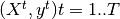
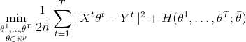
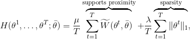
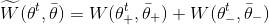

Welcome to MTW documentation¶
Wasserestein regularization for sparse Multi-task regression.
Given high dimensional regression datasets  , MTW solves the optimization problem:

where:

with

where W is the Unbalanced KL Wasserstein distance.
Install the development version¶
From a console or terminal clone the repository and install MTW:
git clone https://github.com/hichamjanati/mtw.git
cd mtw/
conda env create --file environment.yml
source activate mtw-env
pip install --no-deps -e .
Demos & Examples¶
Given a ground metric M and the entropy parameter that define the Wasserstein metric, an MTW object can be created and fitted on multi-task regression data (X, y). Where the shapes of X and Y are (n_tasks, n_samples, n_features) and (n_tasks, n_samples)
>>> from mtw import MTW
>>> epsilon = 0.01
>>> mtw = MTW(M= - M / eps, epsilon=eps)
>>> mtw.fit(X, y)
>>> coefs = mtw.coefs_
See ./examples for more.
Dependencies¶
All dependencies are in ./environment.yml
Cite¶
If you use this code, please cite:
@InProceedings{janati19a,
author={Hicham Janati and Marco Cuturi and Alexandre Gramfort},
title={Wasserstein regularization for sparse multi-task regression},
booktitle = {Proceedings of the Twenty-second International Conference on Artificial Intelligence and Statistics},
year = {2019},
volume = {89},
series = {Proceedings of Machine Learning Research},
month = {16--19 Apr},
publisher = {PMLR},
}
ArXiv link: https://arxiv.org/abs/1805.07833
API Documentation¶
An example of API documentation.
Examples¶
A set of examples. It complements the User Guide.